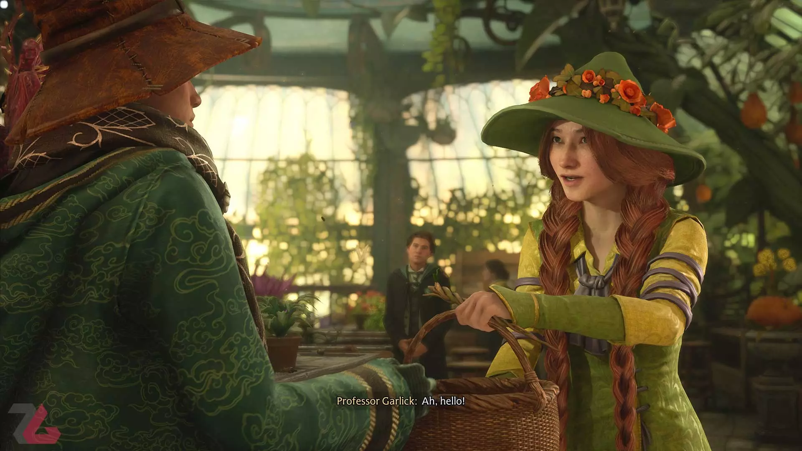
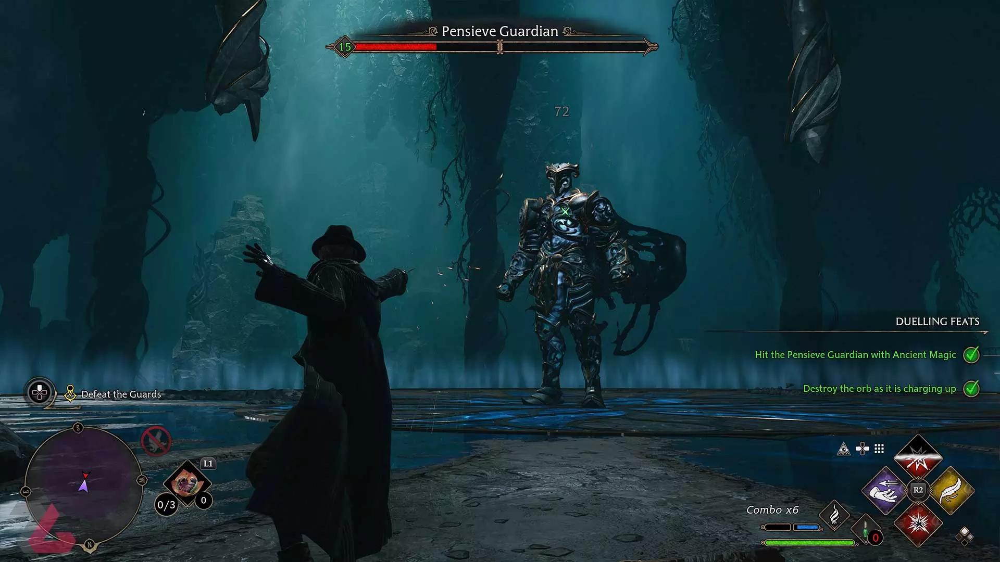

رضا محمد نژاد
سه شنبه 17 بهمن 1402 ساعت 22:51
حدود ۲۶ سال بعد از انتشار اولین کتاب هری پاتر، بالاخره یک ویدیوگیم عالی برای پاترهدها از راه رسید؛ اثری که گیمر را برای چندین و چند ساعت تبدیل به دانشآموز مدرسه علوم و فنون جادوگری هاگوارتز میکند.
قدم زدن در هاگوارتز طی همان ساعات آغازین تجربهی بازی Hogwarts Legacy باعث شد لبخند درشتی روی صورتم کاشته شود؛ چه وقتی افراد داخل تابلوها را میدیدم، زمانیکه یک دانشآموز کتابهای قطور خود را با جادو روی هوا معلق کرده بود و چه وقتی که در کلاس دفاع دربرابر جادوی سیاه با سباستین دوئل کردم. یک گیمرِ بسیار علاقهمند به جهان جادویی خلقشده توسط جی. کی. رولینگ، با تجربهی هاگوارتز لگسی احساسات مختلفی را تجربه میکند. اولین احساس برای من رضایت بود؛ رضایت از اینکه بالاخره اتفاق افتاد. بالاخره جهان هری پاتر، ویدیوگیم AAA قابل توجهی را دریافت کرد که شایستگی آن را داشت.
بخش زیادی از قدرت بازی Hogwarts Legacy دقیقا از همینجا سرچشمه میگیرد؛ از اینکه میگذارد گیمر بسیاری از کارهایی را انجام دهد که دوست داشت در هاگوارتز مشغول انجام آنها شود. وقتی تصور میکردید که یک جغد نامهی مخصوص شما را میآورد، بیشتر میخواستید پس از تبدیل شدن به دانشآموز مدرسه وقت خود را چهطور بگذرانید؟ حضور در کلاسهای مختلف مانند گیاهشناسی؟ مبارزه با جادوگرهای سیاه؟ پرواز با جارو؟ خرید از مغازههای هاگزمید؟ بازدید از گرینگاتز؟ خوردن خوراکیهای عجیبوغریب؟ تعامل با موجودات فوقالعاده مثل هیپوگریف و تسترال؟ ورود به مکانهای مخفی؟ ماجراجویی با دانشآموزهای دیگر؟ همهی این کارها را در بازی هاگوارتز لگسی انجام میدهید.
یکی از عناصر کلیدی در شکلگیری این تجربه، گرافیک فنی بسیار خوب بازی هاگوارتز لگسی است. خواه یا ناخواه باید پذیرفت که بسیاری از مخاطبهای هدف این اثر حتی قبل از اینکه به مولفههای ویدیوگیمی آن فکر کنند، بهدنبال یک شبیهساز دانشآموز بودن در هاگوارتز هستند؛ بهدنبال باور کردنِ نسخهی دیجیتالی و تعاملی یک جهان داستانی. آنها میخواهند کموبیش باور کنند که دانشآموز مدرسهی علوم و فنون جادوگری شدهاند. بخش به بخش جزئیات گرافیکی بازی روی میزان غرق شدن فرد در این دنیا تاثیر دارد.
تاثیری که جلوههای گرافیکی سطح بالا و صداگذاریهای آشنای باکیفیت روی موفقیت هاگوارتز لگسی دارند، بهراحتی قابل درک است. به تصویر کشیدن دقیق و پرجزئیات جهانهای فانتزی همواره هزینههای زیادی دارد؛ مخصوصا در مدیوم ویدیوگیم که مخاطبِ آن صرفا مشغول دیدن محصول نهایی نیست، بلکه به تعامل با اثری میپردازد که مدام سیستم باید بخشهای مختلفش را پردازش کند. وقتی هاگوارتز لگسی در لحظات گوناگون زیبا به نظر میرسد، انگار سازندگان یک دلیل خوب برای عرضهی آن در سال ۲۰۲۳ میلادی دارند. چون مخاطب طی جادوییترین لحظات بازی احساس میکند که تکنولوژی باید به این نقطه میرسید تا چنین ویدیوگیمی بتواند انقدر ما را در خود غرق کند. جدیدترین و مهمترین ساختهی آوالانچ سافتور واقعا متعلق به دوران مدرن ویدیوگیم است.
البته که این بازی در آینده برای کنسولهای نسل ۸ هم عرضه خواهد شد و شامل فناوری منحصربهفرد فکاندازی نیست. البته که گاهی برخی از درهای قلعه چند ثانیه باز نمیشوند تا محیط پشت در بهصورت کامل پردازش شود و آمادهی دیده شدن باشد. اما واضح به نظر میرسد که بازی در بخشهای مختلف، از کیفیت لازم برخوردار است. بهروز بودنِ هاگوارتز لگسی بارها به چشم میآید؛ هم وقتی پدیدار شدن زیبای در ورودی سالن عمومی اسلیترین را میبینید و هم وقتی شاهد رفتارهای دوستداشتنی موجودات جادویی در بخشی از Room of Requirement خود هستید.
خلاصه امکان نداشت بازی Hogwarts Legacy با همین کموکیف مثلا در سال ۲۰۱۱ میلادی و نزدیک به زمان اکران فیلم Harry Potter and the Deathly Hallows: Part 2 عرضه شود. ویدیوگیم نامبرده به بسیاری از فناوریهای مورد استفادهی بازیسازهای روز نیاز داشت و از آنها بهره میبرد. در نتیجه بیشتر این احساس رضایت را به گیمر میدهد که بالاخره زمان غرق شدن در چنین تجربهای فرا رسید